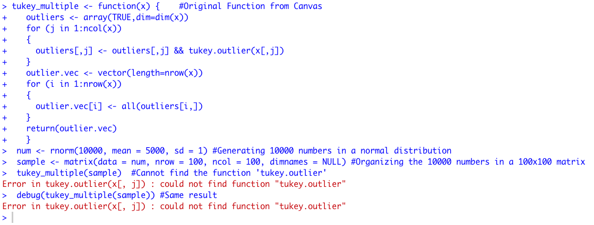
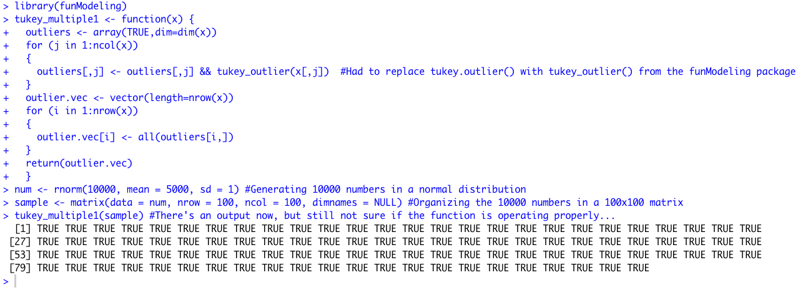
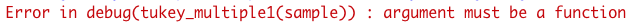

This week's assignment required the debugging of a function posted on Canvas. I initially had trouble understanding what the function was meant to do, but eventually figured out that it
determines whether or not outliers, determined by Tukey's IQR range principles, exist in a given column of a matrix or dataframe. It is intended to produce a vector of boolean values, with TRUE
indicating that an outlier does indeed exist in the specified column of the dataset.
The initial code was broken due to the inclusion of 'tukey.outlier' in the function, which R did not know what to do with.

The code above shows the initial function, the sample data I came up with to test the function, and the resulting errors. Both while attempting to run the function on its own with my sample matrix, and while
running the 'debug()' function, R returned an error message of "Error in tukey.outlier(x[, j]) : could not find function "tukey.outlier". This indicated that this was an undefined portion of the function, and needed addressing if the
tukey_multiple() function were to properly work.
I searched around online to look for functions similar in name to tukey.outlier() and came across a function named tukey_outlier(), found within the funModeling package in R. After downloading the package and loading the library into the current
R session, I was able to successfully run the tukey_multiple() function by changing tukey.outlier() to tukey_outlier().

Oddly enough, after this the debug function started giving me an error message:

I am unsure of the reasoning behind this...
Hopefully this was the solution to the debugging issue, however I have a feeling I overlooked something simple...
As always, all of the files can be found on my Github page. The full pdf output of this assignment is found below, with code commented out that returned errors.